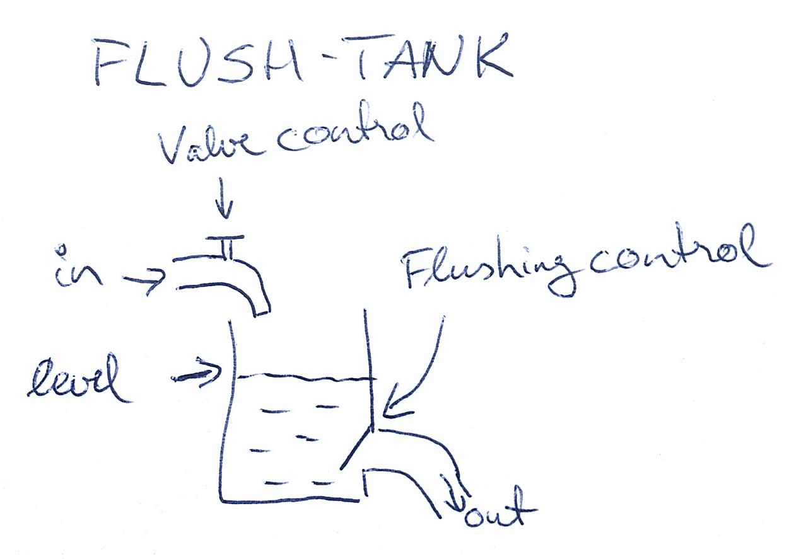
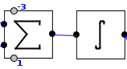
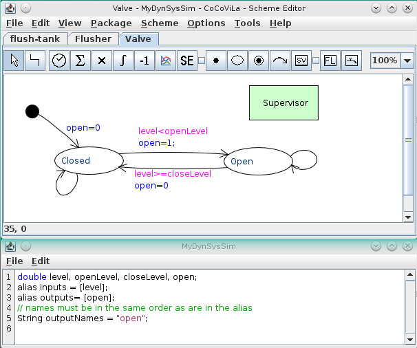
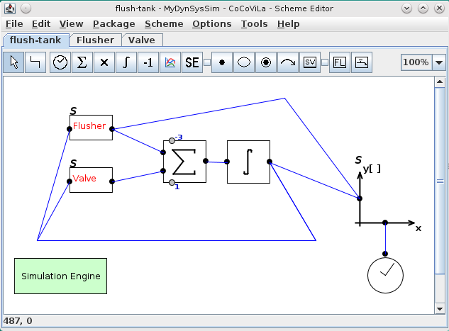
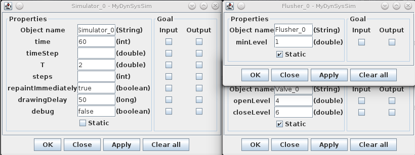
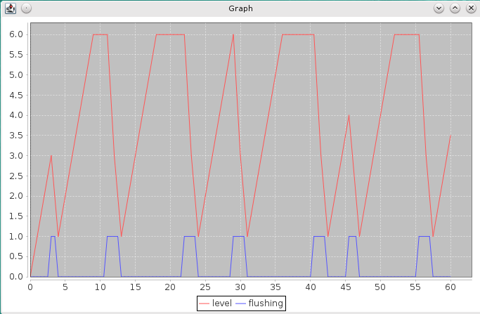

<div class="panel panel-default">
  <div class="panel-body">

<h1>Hands-on</h1>

<p>Let us develop a package that simulates the work of a flush-tank. 
Assuming that we have the (above explained) MySimulator package at hand let's 
start the development.
</p>

<p>First we need to develop a principle diagram on how the thing is working. 
A quick sketch could look as follows:
</p>



<p>From there we can identify the following components:
  <ul>
    <li>A valve that fills the tank together a control that opens and closes the valve.</li>
    <li>A flusher that empties the tank together a control that opens ans closes it.</li>
    <li>A tank that accumulates the fillings and emptyings.</li>
  </ul>
</p>

<p>The tank can be modeled as a combination of an Adder and an Integrator. 
Assuming that the water throughput from the valve and the flusher is different,
we can set the multipliers of the Adder accordingly. 
Let the valve throughput be one and and the flusher throughput be 3 times larger, then the 
multipliers would be 1 and -3 (as the flusher lets water out of the tank). 
The level of the tank can be found by integrating the Adders output. Hence the
diagram of the tank in terms of CoCoViLa Dynamic System Simulation package would
look as follows:
</p>



<br>
<p>Next, let's develop the Flusher component. 
For that we need to create a new diagram (Package>Load and MySimulator.xml. 
For more details see <a href="creating.html" class="inner-link">Creating a Mealy state chart</a>).
</p>

<p>Let's design the Flusher as an independent Mealy machine that from time to time opens the 
flushing valve of the tank.
The first thing to do with the current implementation is always adding a Supervisor to the diagram.
</p>

<p>In case of a Flusher it should have 2 states: Waiting and Flushing.
These states correspond to the situation where the flusher (flushing valve) is open or closed.
We model it by introducing a variable <code>flushing</code>.
When moving over from one state to another the flusher is opened or closed and the <code>flushing</code> 
is evaluated to 1 or 0 accordingly. We are going to propagete the value of <code>flushing</code> 
outside the Flusher, hence it has to be declared as an output. 
</p>

<p>Flushing should stop when the level of water in the tank drops below some threshold.
Let's introduce two more variables: <code>minLevel</code> (the threshold) and <code>level</code> 
(input from outside). We are going to change the state Open to Close when the <code>level</code> 
drops below <code>minLevel</code>
</p>

<p>To imitate the operation of a flush-tank, flushing should take place every now and then.
We can make it happen by measuring the elapsed time and setting randomly a waiting time until 
the flushing takes place next. 
For that we introduce variables <code>waitingTime</code>, <code>timeElapsed</code> and 
<code>timeStep</code>. 
The latter is acquired from the Supervisor and denotes the period of the machine execution.
</p>

<p>All together the diagram would look as follows:
</p>


<p>Below the diagram is the specification extension (Scheme>Extend...) where all the variables 
must be declared as well as the inputs and outputs. 
To finish developing the flusher component export it as a scheme object (as it is described in 
<a href="mm2object.html" class="inner-link">Create a new Scheme Object from a diagram</a>).
I would be advisable to define the <code>minLevel</code> as a field of the component.
</p>

<p>The Valve component can be created similarly.
It would be advisable to have some open and close levels set where the valve is opened and closed
according to the tank level. These could be defined as fields as well.
</p>



<br>
<p>Now, having the two Mealy machine components at hand we can complete our flush-tank diagram: 
</p>



<br>
<p>Do not forget to evaluate the fileds:
</p>



<br>
<p>And run your simulation. The output could look (as we use randomisation it definitely 
would look somewhat different in your case ;) ) the following:
</p>



<br>
<p>That's it. We hope you enjoied!
</p>

  </div>
  </div>